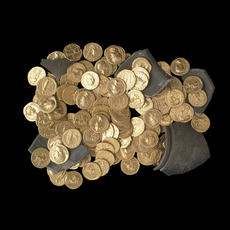

| |
The significant
accessions in the late 19th and 20th centuries covered all cultures.
As well as the important collections of classical coins from Edward
Wigan and A H Lloyd, those of India were bequeathed by General Cunningham
and those of Britain were acquired from the well-known antiquarian Sir
John Evans. His collection is particularly important for the detailed
information about findspots which he recorded on tickets placed underneath
the coins.
Recent years have
seen the Museum’s purchase grant cut dramatically. As a result, methods
and types of acquisition have changed considerably. Ironically, it is
still often possible to acquire large and spectacular hoards, since
the funding for such acquisitions comes largely from outside the museum
(in particular, from the National Art Collections Fund and the Heritage
Lottery Fund, but also from the British Museum Friends. More routine
objects, that are less newsworthy, have become almost impossible to
purchase. Many of the department’s most important recent acquisitions
have therefore been hoards purchased under the old law of Treasure Trove
or under the provisions of the new Treasure Act. Such hoards include
the late Roman Hoxne, Suffolk, hoard, a hoard of Celtic gold staters
and Roman jewellery from Alton in Hampshire, and the Appledore hoard
of 500 silver pennies of the 11th century. It is worth describing these
and other spectacular acquisitions of recent years in a little more
detail. Hoxne is arguably the most important coin hoard ever acquired
by the British Museum. Buried some time in the first half of the 5th
century AD, it includes more than 15,000 silver coins (mainly siliquae),
over 500 gold solidi, and a spectacular selection of silver and gold
jewellery and tableware. Analysis of the coin element of this unprecedented
hoard is already shedding new light on a number of aspects of late Roman
coin production. In 1996 the museum acquired another spectacular Roman
hoard, this time a group of 126 gold aurei of the 1st and 2nd centuries
AD from Didcot in Oxfordshire. This was only the third hoard of such
aurei ever found in this country. At about the same time the museum
was able to acquire 90 coins from a hoard of 176 plated Roman denarii
found at Wortham in Suffolk. This fascinating group was almost entirely
composed of forgeries of coins of Claudius, suggesting that it was buried
soon after the Roman invasion of AD 43, and was only the second hoard
of plated denarii from Britain.
The Alton hoard
was another spectacular and important acquisition. The hoard included
256 Iron Age Atrebatic gold staters, a Roman gold ring and and a Roman
gold bracelet. The coins were found in two separate groups, one composed
entirely of ‘Celtic style’ pieces, the other of coins showing Roman
influence. The items of Roman jewellery were found in close association
with the group of Romanized coins. This was the first British Iron Age
hoard to include Roman jewellery, making the ring and bracelet the earliest
securely-dated Roman jewellery ever found in this country. The hoard
also included a number of rare or unique coins, including one which
clearly shows that the Atrebatic king Tincommius has been misnamed by
19th- and 20th-century historians and was actually called Tincomarus.
An even more recent
acquisition is a hoard of nearly 500 silver pennies found at Appledore
near Dungeness on the Kent coast. The hoard, which was probably buried
about 1050-53, is the most significant find of late Anglo-Saxon coins
to be made in England this century. It consists predominantly of ‘Expanding
Cross’ type coins, characteristic of Edward the Confessor’s reign (1042-66),
from a number of different mints. Its size and the large number of mints
represented will enable a serious study of coin circulation in the mid-11th
century, while the composition of the hoard prompts a re-evaluation
of the ‘Expanding Cross’ type.
2 of 3
1
- 2 - 3
|
|

Didcot hoard, Roman, about AD 54-160, Found near Didcot, Oxfordshire,
England. A rich Roman's savings?
|
|
|
|